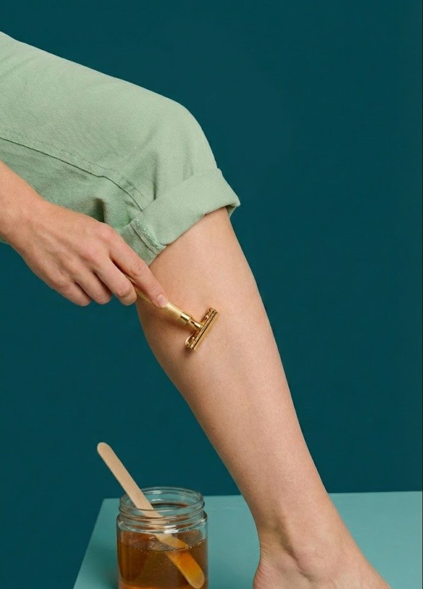
Gyanta / Borotva
❌ Nagyon időigényes
❌ Gyorsan visszanő
❌ Gyakori irritáció
❌ Hetente ismételni kell
❌ Csak a szőr egy részére
❌ Hosszú távon a legdrágább
❌ Bizonyos bőrítpusra nem jó

Tartós simaság a orvosi diódalézerrel, 4 év tapasztalattal és 1 év garanciával!
1023 Bécsi út 2 (A Kolosy térnél)
✅ 8 alkalom elég ✅ 2 alkalom ajándék ✅ bérlet helyett alkalmanként fizetsz.
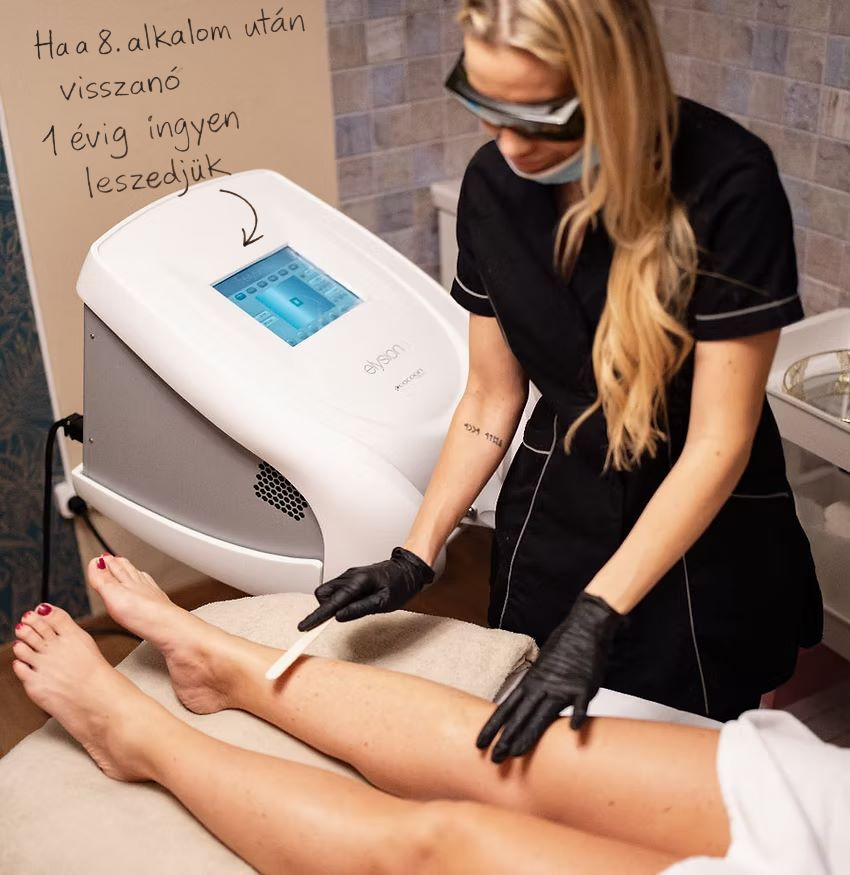
✅ kockázatmentes ✅ kötelezettségmentes ✅ 0 ft
Szia, Zsófi vagyok!
Tudom, hogy tele vagy kérdőjelekkel:
"Fájni fog?", "Megég a bőröm?", "Biztos, hogy végleges lesz?", "Ciki lesz levetkőzni?" - Ez tök normális! Emlékszem én is, hogy izgultam :)
Ne félj, a konzultációm pont ezeket oszlatja el! Leülünk egy kávéra, őszintén átbeszéljük a kérdéseidet, megnézem a bőr- és szőrtípusodat, megmutatom a gépet is és azt is, hogy hány alkalomra lesz szükséged a véglegességhez.
Nem fogok rád tukmálni semmilyen bérletet. 4 év és 8000+ óra tapasztalat után hidd el, megvan a vendégköröm :)
Az ingyenes konzultáció nekünk is érdekünk, hiszen csak azt a vendéget vállaljuk el, akinél tényleg 100%-os és biztonságos eredményt tudunk elérni.
A MOSAIC-ban tiéd az időm és a figyelmem. A gombra kattinta foglalhatsz.
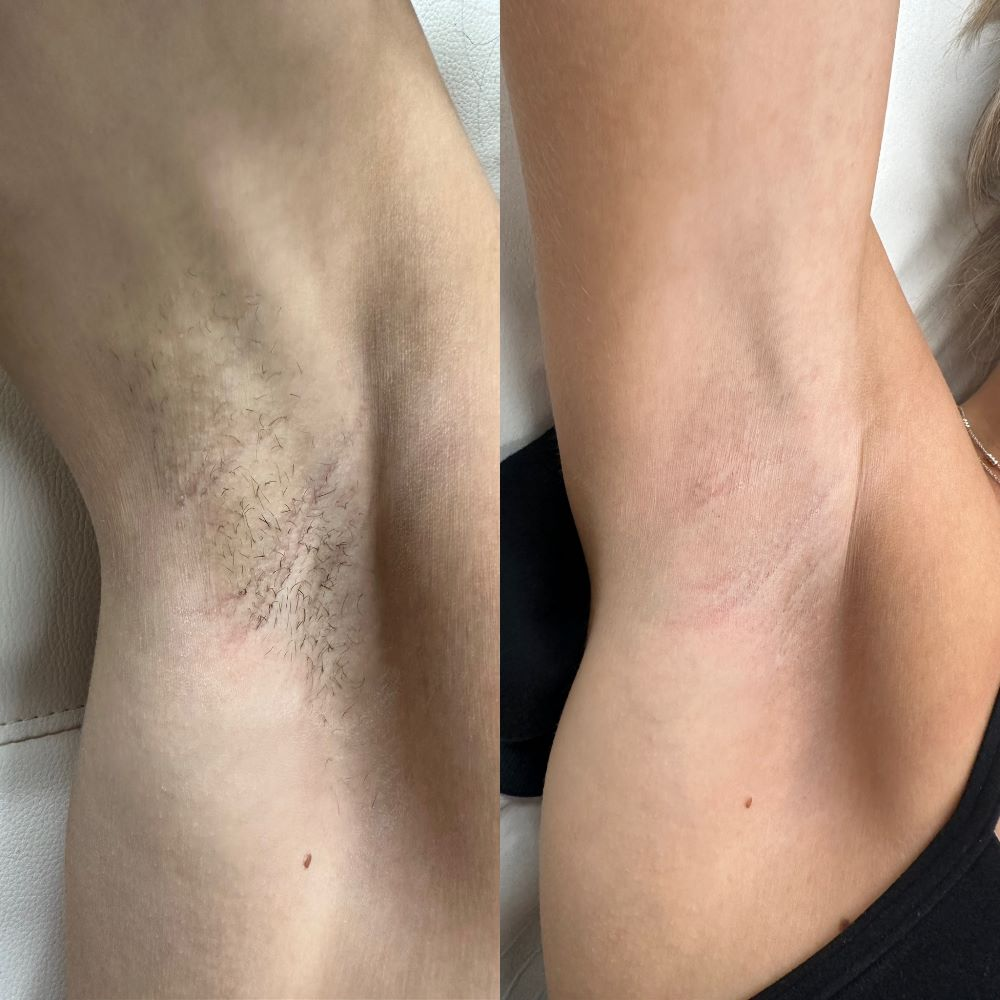
Már az első alkalom után látványos!
1. A Világélvonalbeli Technológia: Az Elysion Pro-val, a világ egyik legerősebb diódalézerével dolgozunk. Ultrarövid impulzusokkal, fájdalommentesen pusztítja el a szőrtüszőket a mélyben, miközben a bőrfelszín teljesen sértetlen marad.
2. 8 alkalom és végleges: A kúra során a biológiai ciklusokat követve minden egyes szőrszálat a saját aktív (anagén) fázisában "kapunk el", így a kezelt szőrszálak 8 alkalom után többet nem nőnek vissza.
3. Ezért extra sima: A "megsütött" szálak a kezelés után 10-15 nappal maguktól, gyökerestől távoznak, míg a borotvával csak a szőrszálak kilógó részét éred el.
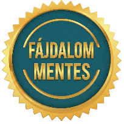
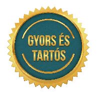
Ezért ez a legjobb és legbiztonságosabb megoldás 👇

❌ Nagyon időigényes
❌ Gyorsan visszanő
❌ Gyakori irritáció
❌ Hetente ismételni kell
❌ Csak a szőr egy részére
❌ Hosszú távon a legdrágább
❌ Bizonyos bőrítpusra nem jó
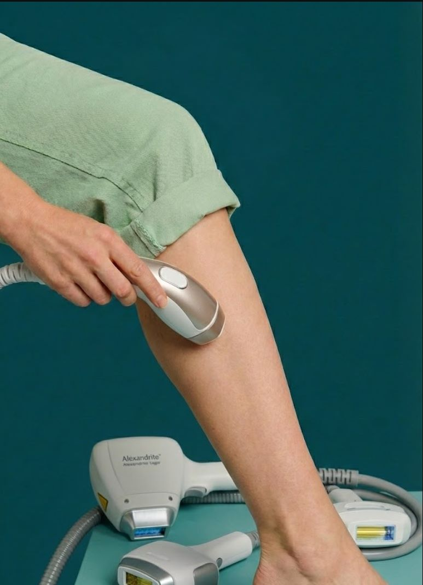
❌ Sok idő egy kezelés
❌ Nem mindig végleges
❌ Fájdalmas, irritáló lehet
❌ Néha évekig kell járni
✅ A teljes szőrre
❌ Nagyon drága lehet
❌ Nem minden bőrtípusra
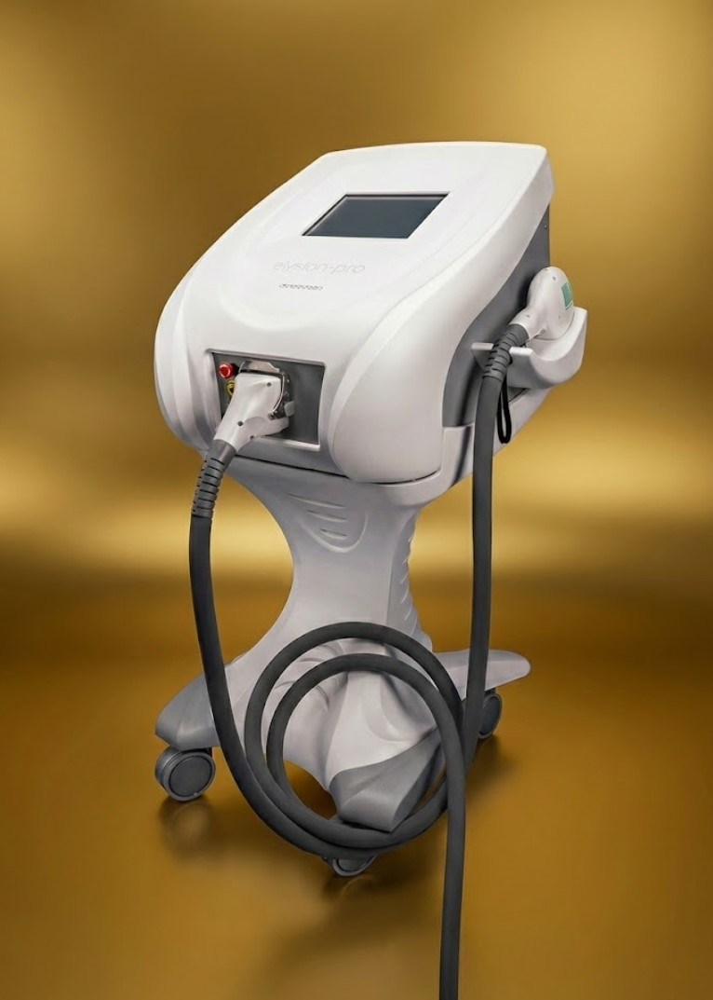
✅ Villámgyors a kezelés
✅ Az eredmény tartós marad
✅ Szinte fájdalommentes
✅ Maximum 8 alkalom elég
✅ Tüszővel együtt tűnik el a szőr
✅ Árban a legkedvezőbb
✅ Minden bőrtípusra
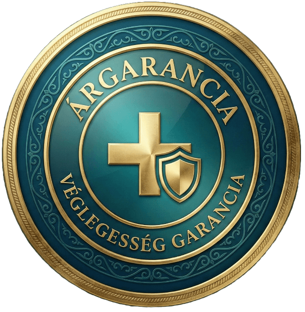
✅ ÁRGARANCIA: Fix 8 alkalom a tartós hatáshoz és ebből csak 6 alkalmat fizetsz, de azt sem előre, hanem alkalmanként. (A 4. és a 8. ajándék)
✅ 12 HÓNAP GARANCIA: Ha a 8. kezelés után 12 hónapig visszanőne a szőr, azt ingyen eltávolítjuk!
✅ VÉGLEGESSÉG GARANCIA: A 12 hónap letelte után az éves fenntartó kezeléseket örökre 50% kedvezménnyel veheted igénybe.

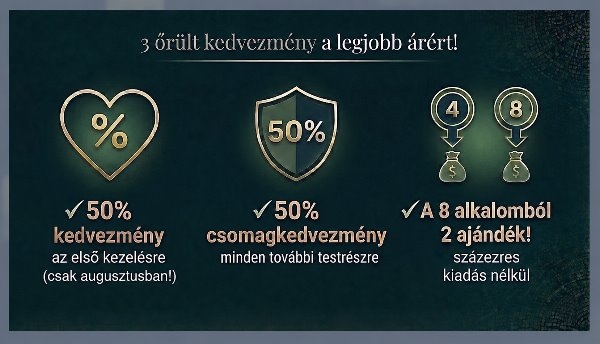
1. Az első alkalommal - Csak augusztusban bármilyen testrészre vagy csomagra 50% kedvezményt kapsz!
2. A Csomagok érik meg a legjobban! A legnagyobb testrész normál áras, de minden további testrészt 50% kedvezménnyel vehetsz igénybe!
3. A 8-ból 2 alkalom ajándék! Nem kelll megvenned semmilyen bérletet előre mert a 4. és a 8. alkalmat úgy is ajándékba adjuk, hogy alkalmanként fizetsz.
Óriási csomagkedvezménnyel!
Válaszd ki a legdrágább testrészt, például láb, kar vagy intim és minden további testrészt féláron kapsz meg a csomagba, akkor is ha az ugyanolyan nagy!
Példák az egyedi csomagra:
- Láb + kar + hónalj + arc => 150.000 Ft helyett 104.500 Ft
- Láb + intim => 95.000 Ft helyett 77.000 Ft
- Kar + hónalj => 61.000 Ft helyett 51.500 Ft
- Arc + kar => 72.000 Ft helyett 57.000 Ft
Válassz második, harmadik, negyediknek bármilyen kis testrészt!
Pajesz, nyak, kézfej, mellkas, dekoltázs, hascsík, popsi, lábujjak, stb...
A legnagyobb testrész normál áron - minden további testrész FÉLÁRON!
A 8 alkalomból csak 6-ot fizetsz, 2 alkalom ajándék! (A 4. és a 8. alkalom)
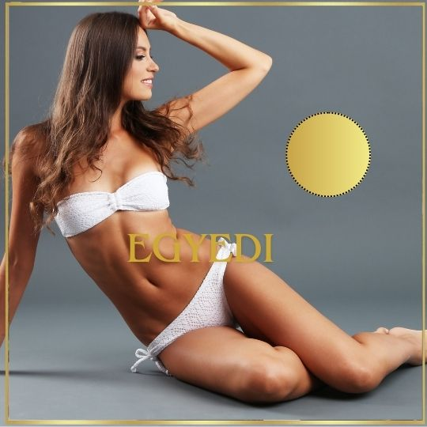
Te válogatod össze, hogy pontosan mik legyenek a csomagban
8 alkalmas program:
Az első testrész normál áron, minden további testrész féláron!
✅ 12 hó garancia: ha visszanő ingyen eltávolítjuk
✅ Árgarancia: Az ár fix a program végig
Csak 6 alkalmat fizetsz (A 4. és 8. ajándék!)
IDŐPONTFOGLALÁS!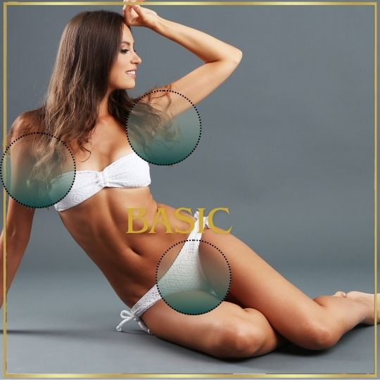
Teljes hónalj, Teljes intim fazon elől + Fenékcsík
8 alkalmas program:
364.000 Ft 273.000 Ft
✅ 12 hó garancia: ha visszanő ingyen eltávolítjuk
✅ Árgarancia: Az ár fix a program végig
Csak 6 alkalmat fizetsz - 45.500 Ft / alkalom (A 4. és 8. ajándék!)
Spórolsz: 91.000 Ft
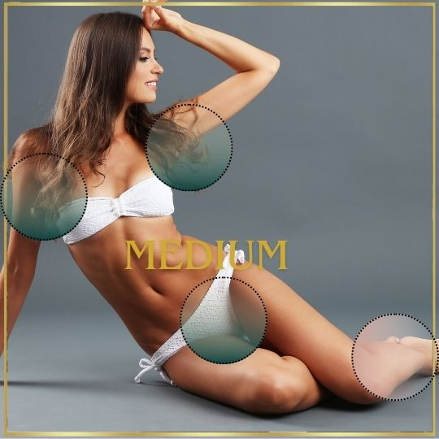
Térd, Lábszár, Lábfej + Ujjak, Honalj, Teljes intim + Fenékcsík
8 alkalmas program:
504.000 Ft 378.000 Ft
✅ 12 hó garancia: ha visszanő ingyen eltávolítjuk
✅ Árgarancia: Az ár fix a program végig
Csak 6 alkalmat fizetsz - 63.500 Ft / alkalom (A 4. és 8. ajándék!)
Spórolsz: 127.000 Ft
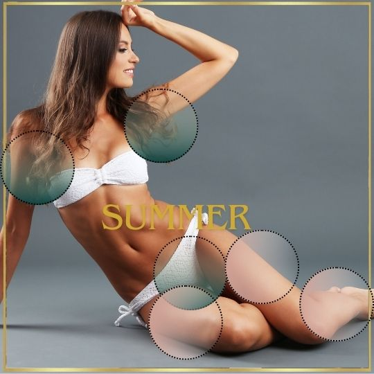
Comb, Térd, Lábszár, Lábfej + Ujjak, Honalj, Teljes intim + Fenékcsík
8 alkalmas program:
668.500 Ft 501.000 Ft
✅ 12 hó garancia: ha visszanő ingyen eltávolítjuk
✅ Árgarancia: Az ár fix a program végig
Csak 6 alkalmat fizetsz - 83.500 Ft / alkalom (A 4. és 8. ajándék!)
Spórolsz: 167.000 Ft
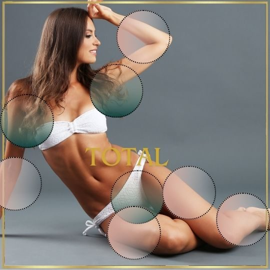
Teljes Láb + Teljes Kar + Hónalj + Intim + Váll, Felkar, Alkar, Kézfej + Ujjak
8 alkalmas program:
860.000 Ft 645.000 Ft
✅ 12 hó garancia: ha visszanő ingyen eltávolítjuk
✅ Árgarancia: Az ár fix a program végig
Csak 6 alkalmat fizetsz - 107.500 Ft / alkalom (A 4. és 8. ajándék!)
Spórolsz: 215.000 Ft
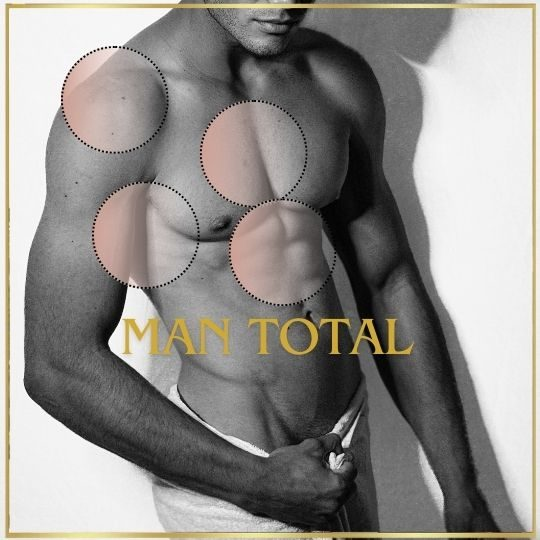
Teljes Hát + Teljes Váll + Mellkas + Has + Hónalj azaz teljes felső test
8 alkalmas program:
544.000 Ft 408.000 Ft
✅ 12 hó garancia: ha visszanő ingyen eltávolítjuk
✅ Árgarancia: Az ár fix a program végig
Csak 6 alkalmat fizetsz - 68.000 Ft / alkalom (A 4. és 8. ajándék!)
Spórolsz: 136.000 Ft
A 8 alkalomból 6 alkalmat fizetsz - a 4. és 8. ajándék!
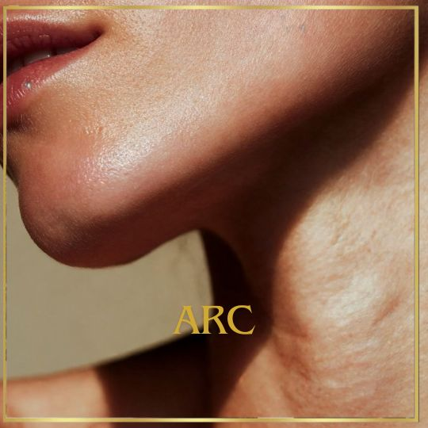
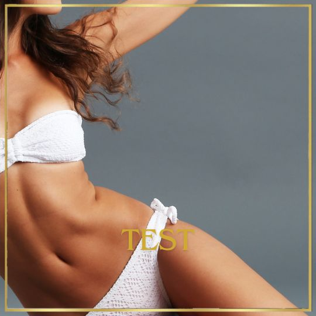
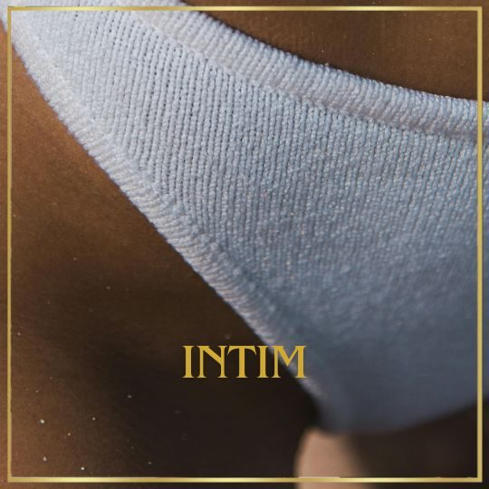
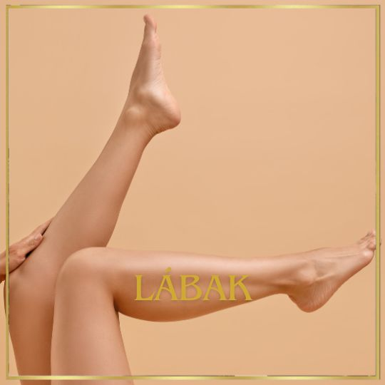
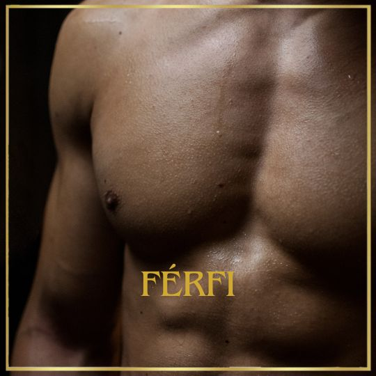

Több mint 3 év és 8.000+ óra tapasztalattal vigyázó és profi társad leszek a bársonyosság felé vezető úton.
Amióta édesanya vagyok, más szemmel nézem a felelősséget. Tudom, milyen nehéz manapság olyan helyet találni, ahol nemcsak kezelnek, hanem valóban odafigyelnek rád.
A legmagasabb szakmai protokoll szerint, fix áras csomagokkal és 12 hónap garanciával végig melletted leszek.
A MOSAIC lényege nem a futószalag, hanem a minőség, ezért egy 60 perces első konzultációval várlak, ahol összerakjuk a kezelési terved és már el is kezdjük a legelső kezelésed! :)
A többszázezres bérlet tukmálása helyett mi 3 dolgot szeretnénk neked "eladni": Eredményt, biztonságot és odafigyelést, hogy jó helyen vagy.
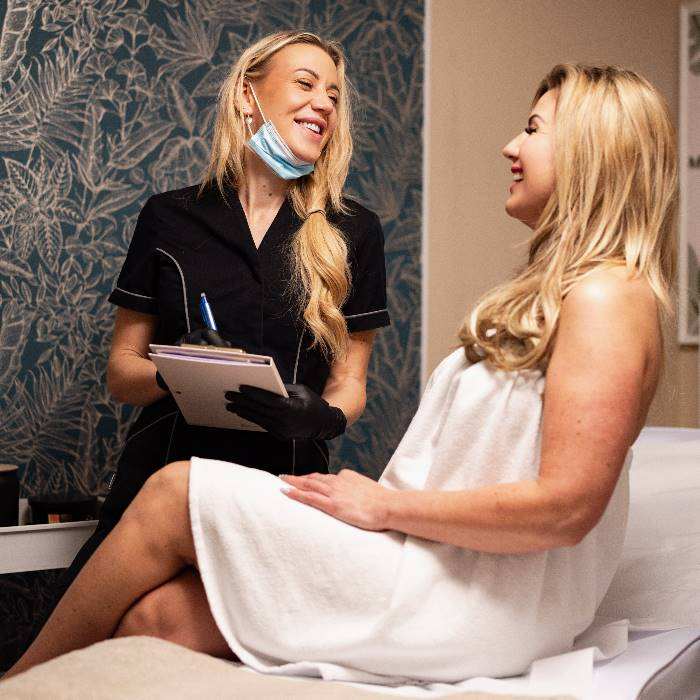
Zsófi válaszol
1. Mennyire tartós? A lézer nemcsak a felszíni szőrszálat égeti el, hanem a szőrtüszőben lévő növekedési sejteket pusztítja el a hő által. Mivel a "gyökér" megsemmisül, a szőr fizikailag képtelen visszanőni. 8 alkalom után már évi 1 fenntartó kezelés elég.
2. Mennyire biztonságos? Maximálisan. Az Elysion Pro szelektív módon működik: a lézerfény kizárólag a szőrszál sötét pigmentjében nyelődik el, a környező bőrszövetet érintetlenül hagyja, így nincs égési sérülés vagy bőrkárosodás.
3. Mennyire fáj? Gyakorlatilag fájdalommentes. A kezelőfejbe épített Crystal Freeze rendszer folyamatosan 5°C-ra hűti a bőrt, ami természetes érzéstelenítőként hat. A forróság helyett így csak enyhe, a kellemetlenség.
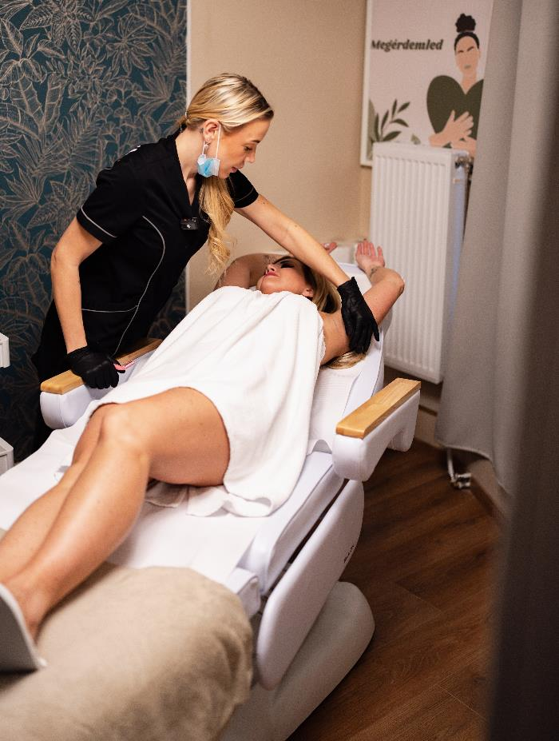
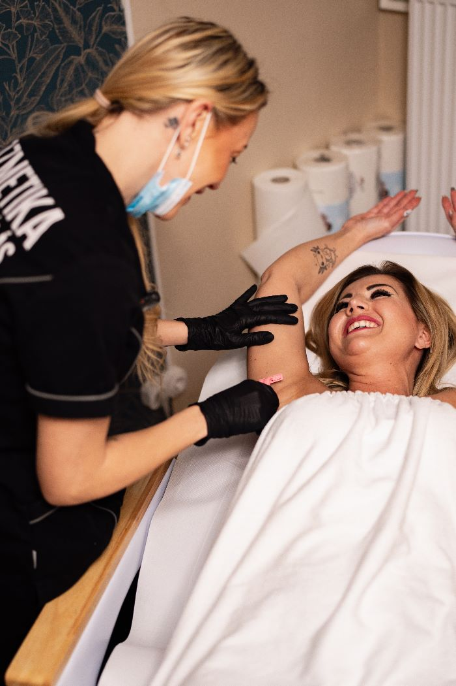
Nem lesz rá szükséged. De ha mégis úgy érzed, hogy kérdésed van, nézzünk rá, gyulladt vagy tanácsra van szükséged bármikor várlak szeretettel ingyenes kontroll időponton, amit ugyanolyan könnyen bármikor online le tudsz foglalni mint a normál kezelést!


A gondtalan nyár nem júniusban kezdődik, hanem most.
Képzeld el a következő nyaralásodat: nincs kapkodós borotválkozás a fürdőszobában, nincs bőrirritáció a sós víztől, és nem kell takargatnod magad a benőtt szőrszálak miatt.
Csak Te vagy, a napfény, és a tökéletesen sima, bársonyos bőröd szabadsága.
A MOSAIC-ban most még időben vagy, hogy valóra váltsd ezt az érzést. A biztonságos kezdés garantált: állapotfelmérésünk során a Te bőrödre hangoljuk a csúcstechnológiás Elysion Pro lézerünket. A kezelés pedig? Teljesen fájdalommentes. Olyan gyengéd, hogy közben ellazulhatsz, miközben mi gondoskodunk a tartós simaságról.
Kezdd el most, hogy nyáron már csak ragyognod kelljen!
A régebbi típusú lézereknél és az IPL-nél gyakori a csípő, égető érzés. A MOSAIC Elysion Pro szabadalmaztatott Crystal Freeze technológiája a kezelés alatt végig 5°C-ra hűti a bőrödet. Ez a "kontakt hűtés" érzésteleníti a felületet, miközben a lézer a mélyben dolgozik. A legtöbb vendégünk csak kellemes hűvösséget és enyhe bizsergést érez.
IPL-nél és a régebbi lézereknél gyakran 10+ alkalom kellett, nálunk maximum 8, de ha kevesebb kell, kevesebbet fizetsz! Mivel az Elysion Pro az egyik legnagyobb csúcsteljesítményű (3500W) dióda lézer a piacon, hatékonyabban pusztítja el a szőrtüszőket, mint a gyengébb gépek. Már az első kezelés után látványos (akár 20-30%-os) ritkulást tapasztalsz majd.
Bár az Elysion Pro technológiája lehetővé teszi a barnult bőr kezelését is, a villanások utáni 3-5 napban a bőröd "pihenőidőt" kér. Ebben a rövid időszakban kerülni kell az intenzív hőt és UV-sugárzást (szolárium, déli napozás), és a kezelt területen kötelező az SPF 50+ fényvédő használata. Ha ezt betartod, nem kell kihagynod a nyári szezont, csak egy kis tudatosságra van szükség!
A kezelt szőrtüszők soha többé nem termelnek szőrt. Az évek során a hormonális változások miatt inaktív (alvó) tüszők ébredhetnek fel, ezért a 12 hónapos garancia után, évente 1 fenntartó "emlékeztető" kezelésre szükség lehet, de a mindennapi borotválkozást örökre elfelejtheted.
A lézeres kezeléssorozat alatt bármikor borotválkozhatsz, amikor csak jólesik, így a bőröd végig sima maradhat. Sőt, a borotva használata kifejezetten ajánlott, mert a lézer csak a növekedési fázisban lévő szőrt tudja kezelni. Az egyetlen szabály: a tövestől való eltávolítást (gyanta, epilátor, csipesz) végleg felejtsd el, mert az "kitépné" a lézer célpontját, a szőrtüszőt.
A legfontosabb: borotváld le a kezelendő területet 24 órával az időpontod előtt! Így a lézer energiája nem a felszíni szőrszálban vész el, hanem egyenesen a szőrtüszőbe jut. Tilos gyantázni vagy epilálni a kezelés előtti 3-4 hétben, mert szükségünk van a szőrtüszőre a gép vezérléséhez.
IPL (Villanófény): Nem lézer! Szórt fénye gyengébb, csak "elaltatja" a szőrtüszőt (ami később újraéled), nem pusztítja el véglegesen.
Alexandrit lézer: Régebbi orvosi technológia. Hatékony, de kockázatos: barnult bőrön égést okozhat (ezért nyáron tilos!), és a kezelés gyakran csípős, fájdalmas érzés.
Mivel a hűtőfejünk folyamatosan védi a bőrt, az intim területek érzékeny bőre sem sérül, és a fájdalomérzet is minimális. Teljes diszkréció mellett, profi szakember végzik a kezelést, így maximális biztonságban vagy!
A lézeres szőrtelenítés a létező legjobb orvosi megoldás a szőrbenövésre. Mivel megszüntetjük magát a szőrnövekedést és a gyulladást okozó tüszőt, már 1-2 alkalom után teljesen megszűnnek a fájdalmas csomók és a bőrpír. A bőröd végre megnyugodhat és egységes színűvé válhat.
⛔ SZIGORÚAN TILOS (Nem kezelhetünk):
⏳ HALASZTANI KELL (Később jöhetsz):
🎯 HELYI KIZÁRÁS (Kikerüljük/Letakarjuk):
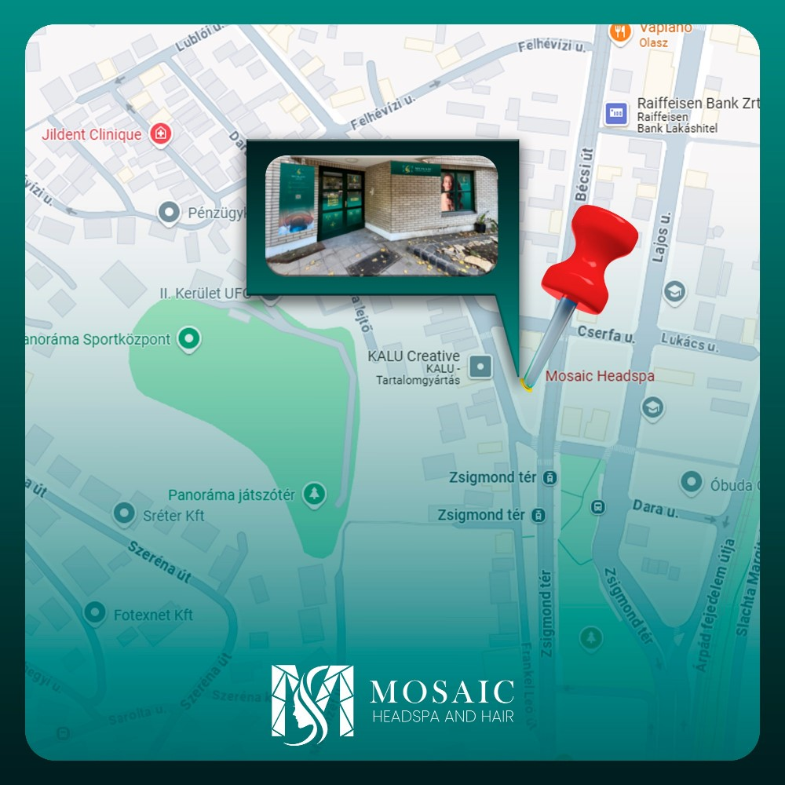
A 2. és 3. kerület határán vagyunk. A 3. kerület Zsigmond térhez közel. Autóval érkezve ezt írd be: 1023 Bécsi út 2.
Mindig találsz parkolóhelyet a szalon körül!
Tömegközlekedéssel: a 17-es, 19-es, 41-es villamossal, a 9-es, 29-es, 111-es, 65-ös/65A buszokkal vagy a H5 HÉV-vel (Batthyány tér felől) gyere; szállj le a Zsigmond tér vagy Kolosy tér megállónál, onnan pár perc sétára vagyunk.
1023 Budapest Bécsi út 2.
A Kolosy és a Zsigmond tér között.
Hétfő - Péntek
8:00 – 20:00
Szombat
9:00 - 18:00
Vasárnap
ZÁRVA
20% szeptemberi kedvezménnyel!